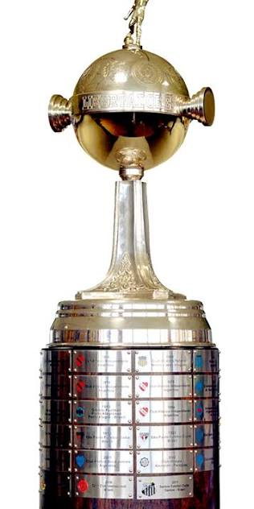

Sobre o Torneio
A Copa CONMEBOL Libertadores é a principal competição de futebol entre clubes profissionais da América do Sul, organizada pela Confederação Sul-Americana de Futebol (CONMEBOL) desde 1960.
Conhecida mundialmente como "A Glória Eterna", a competição reúne os maiores gigantes do continente em batalhas épicas, marcadas por estádios lotados, rivalidades históricas e atmosferas incomparáveis.
O campeão da Libertadores garante vaga na Copa Intercontinental da FIFA, na Recopa Sul-Americana e no Mundial de Clubes, escrevendo seu nome para sempre na história do futebol.

Taça da Libertadores
Organização: CONMEBOL — América do Sul
O troféu mais desejado do continente sul-americano, símbolo de raça, tradição e imortalidade no futebol.
Origem e História
A competição foi criada em 1960 com o nome de Copa dos Campeões da América, reunindo inicialmente apenas os campeões nacionais de sete países sul-americanos.
Seu nome é uma homenagem aos líderes das guerras de independência da América do Sul, como Simón Bolívar, José de San Martín, Dom Pedro I, José Artigas e Bernardo O'Higgins.
O primeiro campeão da história foi o Peñarol, do Uruguai, que inaugurou uma era de grandes duelos entre clubes uruguaios, argentinos e brasileiros.
Grandes Campeões
Independiente
Conhecido como o "Rey de Copas", o clube argentino é o maior vencedor da história da competição, com 7 títulos conquistados.
Boca Juniors
Com 6 títulos, o Boca Juniors protagonizou diversas eras vitoriosas e transformou La Bombonera em um dos templos da Libertadores.
Peñarol
Primeiro campeão do torneio e pentacampeão da América (5 títulos), é um dos clubes mais tradicionais do continente.
River Plate e Estudiantes
Ambos possuem 4 conquistas cada, sendo protagonistas de grandes finais e campanhas inesquecíveis ao longo das décadas.
Gigantes do Brasil
São Paulo, Santos, Grêmio, Palmeiras e Flamengo lideram o futebol brasileiro na competição, cada um com 3 títulos conquistados.
Finais Inesquecíveis
Desde 2019, a grande decisão da Libertadores passou a ser disputada em jogo único e campo neutro, aumentando ainda mais a emoção.
- 2018 (Madrid): River Plate 3 x 1 Boca Juniors — O Superclássico do século.
- 2019 (Lima): Flamengo 2 x 1 River Plate — Virada histórica nos minutos finais.
- 2021 (Montevidéu): Palmeiras 2 x 1 Flamengo — Tricampeonato na prorrogação.
- 2023 (Rio de Janeiro): Fluminense 2 x 1 Boca Juniors — Título inédito no Maracanã.
- 2024 (Buenos Aires): Botafogo 3 x 1 Atlético-MG — Conquista épica com um jogador a menos.
Formato da Competição
- Fases Preliminares (Pré-Libertadores) com mata-matas eliminatórios.
- Fase de Grupos com 32 equipes divididas em 8 chaves.
- Oitavas de Final, Quartas de Final e Semifinais em ida e volta.
- Grande Final em partida única em estádio previamente definido.
- Premiação milionária e vaga garantida em torneios mundiais.
Recordes da Libertadores
- Maior campeão: Independiente (7 títulos).
- País com mais títulos: Argentina (25) seguida pelo Brasil (24).
- Maior artilheiro da história: Alberto Spencer (54 gols).
- Maior artilheiro brasileiro: Gabigol (31 gols).
- Clube com mais participações: Nacional do Uruguai.
O Espírito de Copa
Jogar a Libertadores exige mais do que técnica: exige mentalidade forte, raça e superação diante de estádios hostis, catimba e jogos na altitude.
As famosas "noites de copa" transformam partidas comuns em batalhas memoráveis que ficam marcadas na memória dos torcedores por gerações.
Curiosidades sobre a Taça
- A base da taça recebe plaquetas de prata com o nome de cada campeão.
- O troféu original teve sua parte superior quebrada durante uma comemoração em 2004.
- Em 2009, a base da taça foi ampliada para caber mais campeões.
- A música tema da entrada em campo tornou-se um hino para os torcedores.
- 47 clubes de 10 países sul-americanos participam de cada edição.
Lema da Competição
"A Glória Eterna não se compra, se conquista em campo."
A CONMEBOL Libertadores representa paixão, tradição, rivalidade e o sonho máximo de todo clube sul-americano.